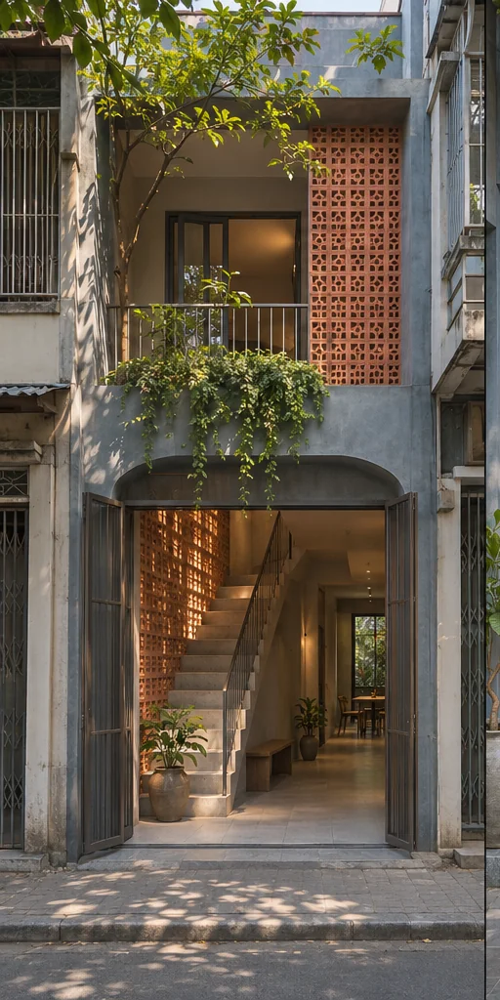

Làm mới từ phần còn tốt.
Cải tạo nhà phố và mặt bằng nhỏ, bắt đầu bằng khảo sát kết cấu, đường ống và cách gia đình sử dụng từng phòng.
Xem hồ sơ dự án
Ba việc trước khi báo giá
- Đo và kiểm tra
- Đối chiếu mặt bằng, độ ẩm và đường cấp thoát nước.
- Chốt phạm vi
- Ghi rõ phần giữ lại, phần tháo và việc phát sinh cần duyệt.
- Lập lịch theo khu vực
- Ưu tiên lối đi và vệ sinh nếu nhà vẫn có người ở.